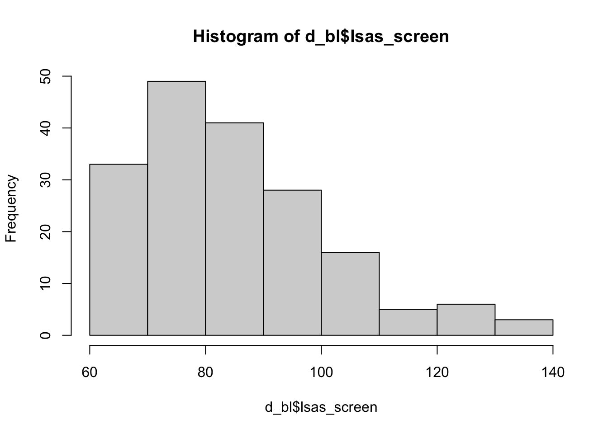
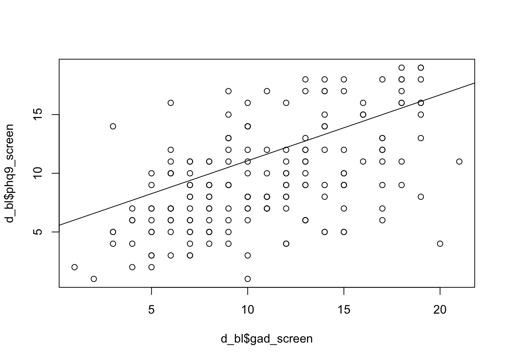
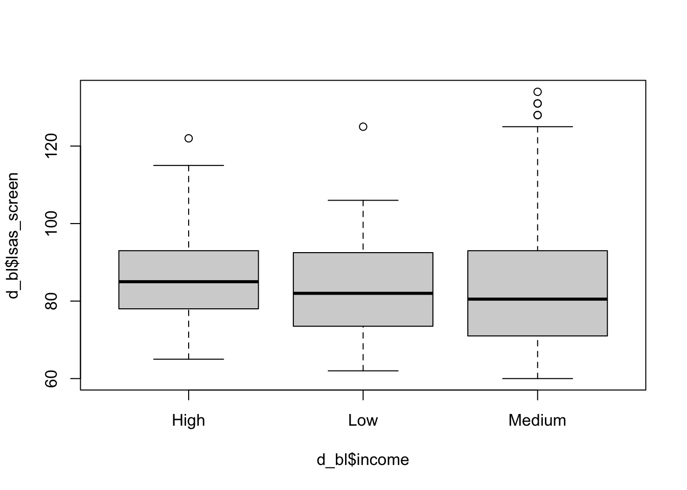
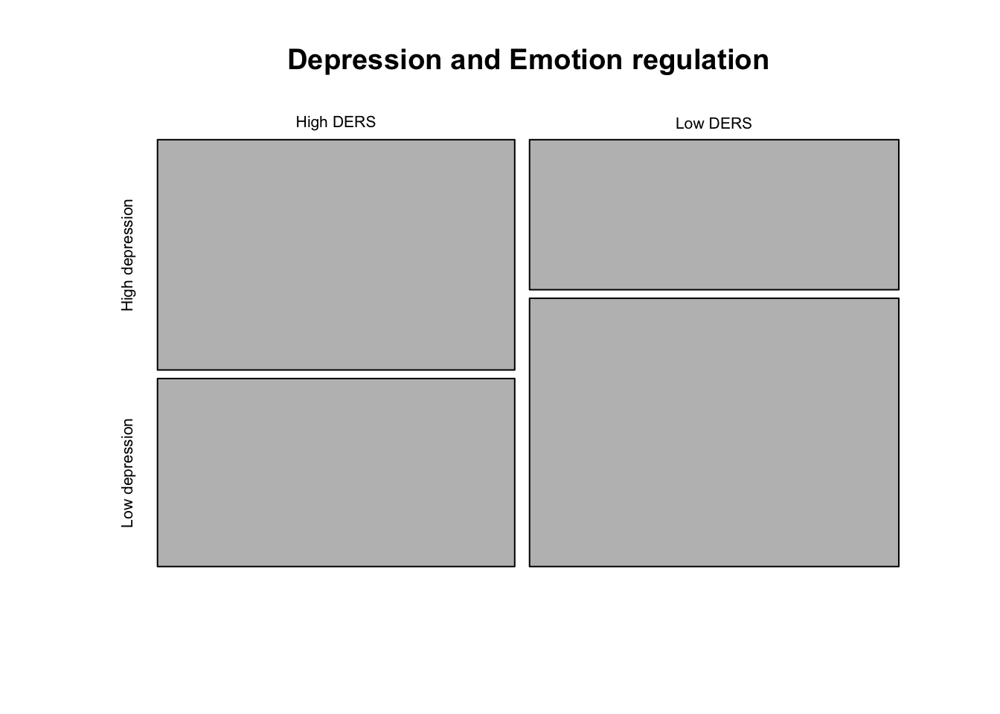

library(tidyverse)
library(here)
d_bl <- read_rds(here("data", "steps_baseline.rds"))
df_data <- read_csv(here("data", "steps_clean.csv"))Exercise solutions
Lab 1
Lab 2
2.1 Use the functions described in yesterdays lab to get a quick overview of the dataset and give a brief summary of it.
glimpse(d_bl)Rows: 181
Columns: 15
$ id <dbl> 1, 2, 3, 4, 5, 6, 7, 8, 9, 10, 11, 12, 13, 14, 15, 16, …
$ group <dbl> 2, 1, 0, 2, 2, 2, 2, 2, 1, 1, 1, 1, 0, 2, 1, 1, 2, 0, 1…
$ lsas_screen <dbl> 63, 71, 98, 63, 74, 81, 67, 76, 88, 73, 86, 78, 97, 72,…
$ gad_screen <dbl> 7, 17, 18, 8, 14, 11, 5, 8, 14, 5, 15, 16, 17, 13, 10, …
$ phq9_screen <dbl> 6, 13, 19, 4, 18, 8, 9, 8, 14, 3, 5, 11, 12, 18, 10, 4,…
$ bbq_screen <dbl> 60, 66, 4, 50, 22, 23, 47, 52, 31, 46, 67, 24, 57, 40, …
$ scs_screen <dbl> 25, 16, 22, 35, 29, 30, 20, 34, 21, 26, 35, 21, 32, 33,…
$ dmrsodf_screen <dbl> 49178, 50727, 45074, 5381, 48444, 50899, 46923, 41428, …
$ ders_screen <dbl> 44, 73, 65, 45, 46, 49, 57, 38, 67, 45, 55, 56, 71, 36,…
$ pid_5_screen <dbl> 25, 20, 48, 17, 24, 20, 24, 26, 39, 23, 24, 26, 23, 15,…
$ gender <chr> "Woman", "Man", "Woman", "Man", "Woman", "Man", "Woman"…
$ education <chr> "Secondary", "Secondary", "University", "Primary", "Pri…
$ income <chr> "Medium", "Low", "Medium", "Medium", "Medium", "High", …
$ gad_cat <chr> "Low anxiety", "High anxiety", "High anxiety", "Low anx…
$ phq_cat <chr> "Low depression", "High depression", "High depression",…head(d_bl)# A tibble: 6 × 15
id group lsas_screen gad_screen phq9_screen bbq_screen scs_screen
<dbl> <dbl> <dbl> <dbl> <dbl> <dbl> <dbl>
1 1 2 63 7 6 60 25
2 2 1 71 17 13 66 16
3 3 0 98 18 19 4 22
4 4 2 63 8 4 50 35
5 5 2 74 14 18 22 29
6 6 2 81 11 8 23 30
# ℹ 8 more variables: dmrsodf_screen <dbl>, ders_screen <dbl>,
# pid_5_screen <dbl>, gender <chr>, education <chr>, income <chr>,
# gad_cat <chr>, phq_cat <chr>ncol(d_bl)[1] 15nrow(d_bl)[1] 1812.5 Calculate spread measures for the LSAS-SR scale, what do they tell you and which ones do you think are most useful to describe the spread of the values. Motivate your answer briefly!
sd(d_bl$lsas_screen)[1] 16.46812var(d_bl$lsas_screen)[1] 271.199range(d_bl$lsas_screen)[1] 60 134IQR(d_bl$lsas_screen)[1] 21hist(d_bl$lsas_screen)
Overcourse:
2.6 Calculate the population variance and standard deviation. How do these differ from the ones given by the functions sd() and var().
# variance
x_bar <- mean(d_bl$lsas_screen)
n <- nrow(d_bl)
residuals <- d_bl$lsas_screen - x_bar
squared_residuals <- residuals^2
sigma_squared_residuals <- sum(squared_residuals)
s_2 <- sigma_squared_residuals / n
s_2 # population variance[1] 269.7006var(d_bl$lsas_screen) # sample variance[1] 271.199# standard deviation
sd <- sqrt(s_2)
sd[1] 16.42256sd(d_bl$lsas_screen)[1] 16.468122.7 Use only the first ten participants and compare the population and the sample variance and standard deviation of LSAS-SR. What do you find, and how do the results compare to those from exercise 2.6.
d_bl_10 <- d_bl[1:10, ]
# variance
x_bar <- mean(d_bl_10$lsas_screen)
n <- nrow(d_bl_10)
residuals <- d_bl_10$lsas_screen - x_bar
squared_residuals <- residuals^2
sigma_squared_residuals <- sum(squared_residuals)
s_2 <- sigma_squared_residuals / n
s_2 # population variance[1] 110.64var(d_bl_10$lsas_screen) # sample variance[1] 122.9333# standard deviation
sd <- sqrt(s_2)
sd[1] 10.51856sd(d_bl_10$lsas_screen)[1] 11.087532.9 Visualize the joint distribution of GAD-7 and PHQ-9 as numeric variables and describe what you see
plot(d_bl$gad_screen, d_bl$phq9_screen)
abline(lm(d_bl$gad_screen ~ d_bl$phq9_screen))
2.10 Visualize the distribution of of LSAS scores by income level and describe what you see
boxplot(d_bl$lsas_screen ~ d_bl$income)
2.11 Create a variable for high vs. low DERS scores and investigate the joint distribution of this variable and phq_cat (that we created in an earlier example)
d_bl$ders_screen_cat <- ifelse(d_bl$ders_screen > median(d_bl$ders_screen),
"High DERS",
"Low DERS"
)
plot(table(d_bl$ders_screen_cat, d_bl$phq_cat), main = "Depression and Emotion regulation")
2.12 Create a table using the tableone package to show descriptives statistics stratified by high vs low depression levels. Briefly interpret what you see.
library(tableone)
vars <- c(
"lsas_screen",
"gad_screen",
"phq9_screen",
"bbq_screen",
"scs_screen",
"dmrsodf_screen",
"ders_screen",
"pid_5_screen",
"gender",
"education",
"income"
)
CreateContTable(vars = vars, data = d_bl, strata = "phq_cat")Warning in CreateContTable(vars = vars, data = d_bl, strata = "phq_cat"):
Non-numeric variables dropped Stratified by phq_cat
High depression
n 82
lsas_screen (mean (SD)) 88.71 (17.74)
gad_screen (mean (SD)) 12.85 (4.25)
phq9_screen (mean (SD)) 13.59 (2.82)
bbq_screen (mean (SD)) 36.16 (16.89)
scs_screen (mean (SD)) 25.91 (6.39)
dmrsodf_screen (mean (SD)) 589841463458342.12 (5341241621657216.00)
ders_screen (mean (SD)) 53.40 (13.45)
pid_5_screen (mean (SD)) 26.96 (8.66)
Stratified by phq_cat
Low depression p test
n 99
lsas_screen (mean (SD)) 81.47 (14.63) 0.003
gad_screen (mean (SD)) 9.20 (4.03) <0.001
phq9_screen (mean (SD)) 6.32 (2.10) <0.001
bbq_screen (mean (SD)) 42.52 (15.64) 0.009
scs_screen (mean (SD)) 29.11 (7.23) 0.002
dmrsodf_screen (mean (SD)) 42288.83 (18185.78) 0.273
ders_screen (mean (SD)) 45.73 (12.45) <0.001
pid_5_screen (mean (SD)) 21.41 (7.54) <0.001 Lab 3
3.1 Estimate the standard error of LSAS_Screen in the STePS study using the formula above, and describe in words what the number means
s_2 <- var(d_bl$lsas_screen)
n <- nrow(d_bl)
se <- sqrt(s_2 / n)
# or using the standard deviation
se <- sd(d_bl$lsas_screen) / sqrt(n)3.2 Calculate the standard error for the proportion of men in the STePS study, and describe the meaning of this number in words
p_hat <- mean(d_bl$gender == "Man")
n <- nrow(d_bl)
se <- sqrt(p_hat * (1 - p_hat) / n)3.3 Describe what would happen to these standard errors if the sample size had been 1000 participants and explain why?
3.4 Calculate the two-sided p-value for the null hypothesis that the mean PHQ-9 value in the underlying population is 9, and describe in words what this number mean.
x_bar <- mean(d_bl$phq9_screen)
se <- sd(d_bl$phq9_screen) / sqrt(nrow(d_bl))
t_value <- (x_bar - 9) / se
(1 - pt(t_value, df = 180)) * 2[1] 0.06076406# or
t.test(d_bl$phq9_screen,
mu = 9,
alternative = "two.sided"
)
One Sample t-test
data: d_bl$phq9_screen
t = 1.887, df = 180, p-value = 0.06076
alternative hypothesis: true mean is not equal to 9
95 percent confidence interval:
8.971991 10.254529
sample estimates:
mean of x
9.61326 3.5 Calculate the p-value for getting our observed proportion of men, \(\hat{p}\), if the the true population proportion, \(p\), is 40% or more using a z-test.
HINT: use the standard error of the proportion: \[ \mathrm{SE}(p) = \sqrt{\frac{p(1 - p)}{n}} \]
and combine with the formula for the z-scores
\[ z= \frac{p - \hat{p}}{SE} \]
p_hat <- mean(d_bl$gender == "Man")
p <- 0.4
n <- nrow(d_bl)
se <- sqrt(p * (1 - p) / n)
z_value <- (p_hat - p) / se
1 - pnorm(abs(z_value))[1] 0.004145271# or
prop.test(
x = sum(d_bl$gender == "Man"),
n = length(d_bl$gender),
p = 0.4,
alternative = "less",
correct = FALSE
)
1-sample proportions test without continuity correction
data: sum(d_bl$gender == "Man") out of length(d_bl$gender), null probability 0.4
X-squared = 6.9696, df = 1, p-value = 0.004145
alternative hypothesis: true p is less than 0.4
95 percent confidence interval:
0.0000000 0.3626461
sample estimates:
p
0.3038674 3.6 Modify the simulation code for the sampling distribution above to determine what would happen to the p-value if the sample size was 10, 100 or 1000
P-value with a sample size of 10
n_samples <- 1e4 # the number of samples
smp_size <- 10 # the size of our samples
means <- rep(NA, n_samples) # an empty vector to contain our mean values
for (i in 1:n_samples) {
x <- rnorm(smp_size, mean = 82, sd = sd(d_bl$lsas_screen))
means[i] <- mean(x)
}
mean(means >= mean(d_bl$lsas_screen)) # proportion of simulated means that are larger than our observed mean[1] 0.305P-value with a sample size of 100
n_samples <- 1e4 # the number of samples
smp_size <- 100 # the size of our samples
means <- rep(NA, n_samples) # an empty vector to contain our mean values
for (i in 1:n_samples) {
x <- rnorm(smp_size, mean = 82, sd = sd(d_bl$lsas_screen))
means[i] <- mean(x)
}
mean(means >= mean(d_bl$lsas_screen)) # proportion of simulated means that are larger than our observed mean[1] 0.0496P-value with a sample size of 10000
n_samples <- 1e4 # the number of samples
smp_size <- 1000 # the size of our samples
means <- rep(NA, n_samples) # an empty vector to contain our mean values
for (i in 1:n_samples) {
x <- rnorm(smp_size, mean = 82, sd = sd(d_bl$lsas_screen))
means[i] <- mean(x)
}
mean(means >= mean(d_bl$lsas_screen)) # proportion of simulated means that are larger than our observed mean[1] 03.7. Explain why the confidence intervals calculated using z-scores are narrower that the ones using t-scores.
3.8 Calculate the 95% confidence interval for PHQ-9, and describe in words what these numbers mean.
x_bar <- mean(d_bl$phq9_screen)
se <- sd(d_bl$phq9_screen) / sqrt(nrow(d_bl))
z <- 1.96
# upper confidence limit
ucl <- x_bar + z * se
# lower confidence limit
lcl <- x_bar - z * se
print(c(lcl, ucl))[1] 8.976291 10.250229# or
t.test(d_bl$phq9_screen,
mu = 9,
alternative = "two.sided"
)
One Sample t-test
data: d_bl$phq9_screen
t = 1.887, df = 180, p-value = 0.06076
alternative hypothesis: true mean is not equal to 9
95 percent confidence interval:
8.971991 10.254529
sample estimates:
mean of x
9.61326 3.9 Calculate the 95% Wald confidence interval for the proportion of men in the dataset using the formula above and interpret its meaning
p_hat <- mean(d_bl$gender == "Man")
n <- nrow(d_bl)
se <- sqrt(p_hat * (1 - p_hat) / n)
z <- 1.96
# upper coinfidence limit
p_hat + z * se[1] 0.370872# lower confidence limit
p_hat - z * se[1] 0.23686283.10 Compare this to what you would obtain using the function prop.test() in R.
prop.test(table(d_bl$gender))
1-sample proportions test with continuity correction
data: table(d_bl$gender), null probability 0.5
X-squared = 27.072, df = 1, p-value = 1.96e-07
alternative hypothesis: true p is not equal to 0.5
95 percent confidence interval:
0.2389772 0.3772418
sample estimates:
p
0.3038674 3.11 Reason about the the meaning and interpretation of the confidence intervals you have calculated in the context of how the actual STePs study was performed. The study can be found at: https://www.nature.com/articles/s44184-024-00063-0
testing two means and contingency tables
Calculate the mean difference in post-treatment LSAS scores, and the associated two-sided p-value, between the therapist-guided and the wait list group
df_data %>%
filter(trt != "self-guided") %>%
t.test(lsas_post ~ trt, data = ., var.equal = TRUE)
Two Sample t-test
data: lsas_post by trt
t = -4.5763, df = 110, p-value = 1.25e-05
alternative hypothesis: true difference in means between group therapist-guided and group waitlist is not equal to 0
95 percent confidence interval:
-30.23220 -11.96065
sample estimates:
mean in group therapist-guided mean in group waitlist
57.35185 78.44828 # or manually
x_bar_tg <- mean(df_data$lsas_post[df_data$trt == "therapist-guided"], na.rm = T)
x_bar_wl <- mean(df_data$lsas_post[df_data$trt == "waitlist"], na.rm = T)
s_2_tg <- var(df_data$lsas_post[df_data$trt == "therapist-guided"], na.rm = T)
s_2_wl <- var(df_data$lsas_post[df_data$trt == "waitlist"], na.rm = T)
n_tg <- sum(!is.na(df_data$lsas_post[df_data$trt == "therapist-guided"]))
n_wl <- sum(!is.na(df_data$lsas_post[df_data$trt == "waitlist"]))
sp2 <- ((n_tg - 1) * s_2_tg + (n_wl - 1) * s_2_wl) / (n_tg + n_wl - 2) # pooled variance
SE_pooled <- sqrt(sp2 * (1 / n_tg + 1 / n_wl)) # pooled standard error
# and put the together
t_value <- (x_bar_wl - x_bar_tg) / SE_pooled
# find the p-value
df <- n_tg + n_wl - 2
p_value <- 2 * (1 - pt(abs(t_value), df)) # multiplied by two to get the two-tailed p-value
p_value[1] 1.250232e-05Complement this with a 95% confidence interval
# z-value 95% CI
se_z <- sqrt((s_2_wl / n_wl) + (s_2_tg / n_tg))
lcl <- (x_bar_wl - x_bar_tg) - 1.96 * se_z
ucl <- (x_bar_wl - x_bar_tg) + 1.96 * se_z
print(c(lcl, ucl))[1] 12.09103 30.10182# t-value 95% CI
df <- n_wl + n_tg - 2
alpha <- 0.05
t_crit <- qt(1 - alpha / 2, df)
lcl <- (x_bar_wl - x_bar_tg) - t_crit * SE_pooled
ucl <- (x_bar_wl - x_bar_tg) + t_crit * SE_pooled
print(c(lcl, ucl))[1] 11.96065 30.23220Do you think the assumption of equal variance between the groups is justifies?
Do you think the other assumptions of the t-test are fulfilled?
How do the results differ if you use the Welch t-test instead
# students t-test
df_data %>%
filter(trt != "waitlist") %>%
t.test(lsas_post ~ trt, data = ., var.equal = TRUE)
Two Sample t-test
data: lsas_post by trt
t = 1.7993, df = 109, p-value = 0.07474
alternative hypothesis: true difference in means between group self-guided and group therapist-guided is not equal to 0
95 percent confidence interval:
-0.7676792 15.8885369
sample estimates:
mean in group self-guided mean in group therapist-guided
64.91228 57.35185 # Welch t-test
df_data %>%
filter(trt != "waitlist") %>%
t.test(lsas_post ~ trt, data = ., var.equal = FALSE)
Welch Two Sample t-test
data: lsas_post by trt
t = 1.7946, df = 106.62, p-value = 0.07555
alternative hypothesis: true difference in means between group self-guided and group therapist-guided is not equal to 0
95 percent confidence interval:
-0.7913918 15.9122495
sample estimates:
mean in group self-guided mean in group therapist-guided
64.91228 57.35185 # very similar reslutsBONUS: If you feel up to it, try to also calculate a z-test for the mean difference in post-treatment LSAS-scores using the formulas above
# z-test of the differences
z_value <- (x_bar_wl - x_bar_tg) / se_z
p_value <- 2 * (1 - pnorm(abs(z_value)))
p_value[1] 4.399067e-06BONUS: Modify the code above to calculate the 99% confidence interval of the mean difference in LSAS-scores at post-treatment between the self-guided and the therapist-guided groups.
z_crit <- qnorm(1 - 0.01 / 2) # finding the z-value for a 99% CI
# define the components of the formula
x_bar_tg <- mean(df_data$lsas_post[df_data$trt == "therapist-guided"], na.rm = T)
x_bar_sg <- mean(df_data$lsas_post[df_data$trt == "self-guided"], na.rm = T)
s_2_tg <- var(df_data$lsas_post[df_data$trt == "therapist-guided"], na.rm = T)
s_2_sg <- var(df_data$lsas_post[df_data$trt == "self-guided"], na.rm = T)
n_tg <- sum(!is.na(df_data$lsas_post[df_data$trt == "therapist-guided"]))
n_sg <- sum(!is.na(df_data$lsas_post[df_data$trt == "self-guided"]))
se_z <- sqrt((s_2_tg / n_tg) + (s_2_sg / n_sg))
# and put it together with the z-value formula
ucl <- (x_bar_sg - x_bar_tg) + z_crit * se_z
lcl <- (x_bar_sg - x_bar_tg) - z_crit * se_z
print(c(lcl, ucl))[1] -3.291151 18.412009# or
df_data %>%
filter(trt != "waitlist") %>%
t.test(lsas_post ~ trt, data = ., var.equal = TRUE, conf.level = 0.99)
Two Sample t-test
data: lsas_post by trt
t = 1.7993, df = 109, p-value = 0.07474
alternative hypothesis: true difference in means between group self-guided and group therapist-guided is not equal to 0
99 percent confidence interval:
-3.455748 18.576605
sample estimates:
mean in group self-guided mean in group therapist-guided
64.91228 57.35185 Compute a t-test for the difference in LSAS-scores between post-treatment and 12-month follow-up and provide an interpretation of its meaning
# using the t-test function
t.test(df_data$lsas_fu12, df_data$lsas_post, paired = TRUE)
Paired t-test
data: df_data$lsas_fu12 and df_data$lsas_post
t = -2.512, df = 97, p-value = 0.01366
alternative hypothesis: true mean difference is not equal to 0
95 percent confidence interval:
-8.3112199 -0.9744944
sample estimates:
mean difference
-4.642857 # or manually
diff_post_12FU <- df_data$lsas_fu12 - df_data$lsas_post
mean_diff <- mean(diff_post_12FU, na.rm = TRUE)
sd_diff <- sd(diff_post_12FU, na.rm = TRUE)
n <- sum(!is.na(diff_post_12FU))
se_diff <- sd_diff / sqrt(n)
t_value <- mean_diff / se_diff
df <- n - 1
p_value <- 2 * (1 - pt(abs(t_value), df))
p_value[1] 0.01365707Also calculate the 95% confidence interval for this difference, using the z-value formula and provide an interpretation of its meaning
diff_post_12FU <- df_data$lsas_fu12 - df_data$lsas_post
mean_diff <- mean(diff_post_12FU, na.rm = TRUE)
sd_diff <- sd(diff_post_12FU, na.rm = TRUE)
n <- sum(!is.na(diff_post_12FU))
se_diff <- sd_diff / sqrt(n)
# and putting it together
lcl <- mean_diff - 1.96 * se_diff
ucl <- mean_diff + 1.96 * se_diff
print(c(lcl, ucl))[1] -8.265524 -1.020190Compare the means of GAD-7 from pre- to post-treatment and interpret the results
t.test(df_data$gad_post, df_data$gad_screen, paired = TRUE)
Paired t-test
data: df_data$gad_post and df_data$gad_screen
t = -6.052, df = 167, p-value = 9.133e-09
alternative hypothesis: true mean difference is not equal to 0
95 percent confidence interval:
-3.141877 -1.596218
sample estimates:
mean difference
-2.369048 Chi-squared tests, and other tests of significance, are sometimes used to check that important pre-treatment characteristics, such as gender or symptom level, are balanced between the treatment groups. Non-sinificant p-values are then taken as an argument that the groups are balanced. Reason about why this is a problematic approach.
Answer: Because a non-significant result is not evidence of no difference. With small samples, even large differences may be non-significant. Conversely, in large samples even the smallest difference may be statistically significant.
Create a categorical for high or low generalized anxiety and one for high and low social anxiety, and use the Chi squared test to test the null hypothesis of no association between the variables
df_data <- df_data %>%
mutate(
gad_cat_screen = if_else(
gad_screen > median(gad_screen),
"High GAD", "Low GAD"
),
sad_cat_screen = if_else(
lsas_screen > median(lsas_screen),
"High SAD", "Low SAD"
)
)
chisq.test(df_data$gad_cat_screen, df_data$sad_cat_screen)
Pearson's Chi-squared test with Yates' continuity correction
data: df_data$gad_cat_screen and df_data$sad_cat_screen
X-squared = 2.4198, df = 1, p-value = 0.1198chisq.test(df_data$gad_cat_screen, df_data$sad_cat_screen)$observed df_data$sad_cat_screen
df_data$gad_cat_screen High SAD Low SAD
High GAD 49 39
Low GAD 40 53chisq.test(df_data$gad_cat_screen, df_data$sad_cat_screen)$expected df_data$sad_cat_screen
df_data$gad_cat_screen High SAD Low SAD
High GAD 43.27072 44.72928
Low GAD 45.72928 47.27072